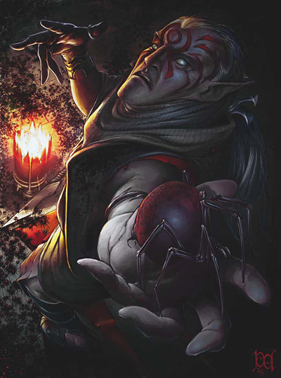

许多幽暗地域中的生物都受到有关蜘蛛力量的影响扭曲，因而成为操纵蜘蛛的大师－蜘蛛法师。虽然受到这种力量吸引的人大多与其种族、文化背景、以及个人兴趣息 息相关，而不是其所属职业－但这些无一例外地都是修习秘术的施法者。选取蜘蛛领域的牧师有时也会学习秘法术以成为蜘蛛法师。
大多数的黑暗 精灵都信奉蜘蛛女神罗丝，也连带的将这份尊敬延伸到大多数与蜘蛛有关的事物之上－因此蜘蛛法师在黑暗精灵社会中通常地位甚高。此外，许多幽暗地域中的种族 －比如变形蛛（aranea）或半蛛人（chitine）－本身就与蜘蛛有深厚的渊源，因此也特别适合成为蜘蛛法师。
生命骰：d6
职业条件：
阵营：任何邪恶
基础豁免检定：强韧+4 Fortitude
技能：攀爬3级 Climb，自然知识4级 Knowledge（Nature）
施法能力：能够以秘法术施展「蛛行术」、「飞虫走兽」（Summon Swarm）、以及「蛛网术」
特殊：欲成为蜘蛛法师的角色必须经历「黥面仪式」（Scarification Ritual）。
--
黥面仪式 Scarification Ritual
为了证明对于蜘蛛法术研究的严肃与奉献，欲进阶此进阶职业的角色必须经历一场黥面仪式－以利刃划开自己的脸部，然后将黑色的灰烬（或其它染料）搽进伤口中，使其愈合之后留下明显突起的深色瘢痕。此仪式将在该角色脸上留下一大片蜘蛛形状的疤痕。
--
职业技能：
以力量为关键属性者：攀爬 Climb，跳跃 Jump
以敏捷为关键属性者：躲藏 Hide，无声移动 Move Silently
以体质为关键属性者：专注 Concentration
以智力为关键属性者：手艺 Craft，神秘知识 Knowledge（Arcane），自然知识 Knowledge（Nature），幽暗地域地区知识 Knowledge（Underdark Local），法术辨识 Spellcraft
以智能为关键属性者：侦查 Spot
每级技能点数：4+智力调整值
职业特性：
擅长武器与防具 Weapon & Armor Proficiency：
蜘蛛法师不擅长任何武器或防具。
每日法术数量/可知法数量 Spell per Day/Spell Known：
蜘蛛法师每升一级（除了第2、5、8级），每日法术数量会上升，就像之前的施法职业一样，但不能获得之前施法职业等级的其它能力（如增进超渡不死生物能力、超魔法或物品制造专长）。蜘蛛法师等级加上所具备的其它施法职业等级，决定其每日法术数量、可知法术与施法者等级。
若角色成为蜘蛛法师前拥有多个施法职业，则必须选择要将此升级的施法等级加到哪一种施法职业上，以决定新的每日法术数量。
毒素豁免检定奖励加值 Poison Save Bonus [特异能力]：
第1级起，蜘蛛法师可将其蜘蛛职业等级加进对抗毒素时的豁免检定。
蜘蛛交谈 Speak with Spider [超自然能力]：
第1级起，蜘蛛法师可以用实时动作与蜘蛛类生物（Spiderlike，下文详述）沟通。无智力的生物只能了解非常简单的概念（最多一个字），不过它通常不会吃掉那些能与其交谈之人。
--
附注：蜘蛛类生物 Spiderlike
以下是所有D&D设定中的蜘蛛类生物－
˙蜘蛛神后之城《City of the Spider Queen》：
蜘蛛化生物（模板）arachnoid Creature，吸血蛛化精灵 drider vampire，缚灵蜘蛛 wraith spider
˙魔物大全《Fiend Folio》：多腿魔蛛 chwidencha
˙怪物图鉴I《Monster Manual I》：
变 形蛛 aranea，狩魔蛛（妖魔）bebilith（demon），蛛化精灵 drider，伊特怪 ettercap，相位蜘蛛 phase spider，变种蜘蛛 monstrous spider，猎魔蛛（妖魔）retriever（demon），蜘蛛虫群 spider swarm
˙怪物图鉴II《Monster Manual II》：
纽吉怪 Neogi，幽影蜘蛛 shadow spider，噬法蛛兽 spellgaunt
˙费伦大陆怪物图鉴《Monster of Faerun》：
半蛛人 chitine，半蛛神眷 choldrith，噬魂蛛 myrolochar，地底蜘蛛（茸蜘蛛与剑蜘蛛）subterranean（Hairy、sword），蜡融妖（妖魔）yochlol（demon）
--
蜘蛛法术 Spider Magic：
第1级起，蜘蛛法师可以将下列法术加进其（所有）施法职业的法术列表中－
0级：黏着术 Stick（见注二）
1级：召唤小型变种蜘蛛 Summon Small Monstrous Spider（见注一）
2级：蛛壳术 Spiderskin（见注二），召唤中型变种蜘蛛 Summon Medium Monstrous Spider
3级：中和毒性 Neutralize Poison，毒击术 Poison，召唤大型变种蜘蛛 Summon Large Monstrous Spider
4级：巨虫术（限蜘蛛）Giant vermin，驱离害虫 Repel vermin，召唤超大型变种蜘蛛 Summon Huge Monstrous Spider
5级：蜘蛛虫群 Spider Plague（与「疫病虫群」Insect plague同，但改为召唤蜘蛛群）
6级：召唤巨型变种蜘蛛 Summon Gargantuan Monstrous Spider
7级：蜘蛛化身 Spider Shape（与「动物化身」Animal Shape同，但只能化为变种蜘蛛）
8级：召唤超巨型变种蜘蛛 Summon Colossal Monstrous Spider
9级：形体变化 Shapechange（但只能变为「蜘蛛类生物」）
由于该角色所有施法职业的「总法术列表」中都会出现上述蜘蛛法术，因此他必须等到升级而能选择新法术时，才能可以选取上述蜘蛛法术－换言之，该角色并不会立刻得知（对于不需法术书的施法职业而言）或学会（对拥有法术书的施法职业而言）这些蜘蛛法术。
--
注一：与「召唤怪物术」（Summon Monster）相同，但只能召唤1只该体型的、1d3只体型小一级、或1d4+1只体型小二级的变种蜘蛛。
--
注二：此为本书新增法术
黏着术 Stick
变化系
等级：吟游诗人0，幽暗地域精英向导1，术士/法师1
法术成分：言语，姿势，材料
施法时间：单动作
距离：碰触
目标：非由魔法创造，且重量不超过5磅的物体
持续时间：立即
豁免检定：意志过则无效（物品）
法术抗力：可（物品）
此 法术可将一件重量不超过5磅的物体黏着在其它较重的物体上。但不需要太大的力量－比如时速10英哩以上的大风，「法师帮手」（Mage Hand）或「隐形仆役」（Unseen Servant）－便可将之分开。实体生物也可使用移动等效动作将其分开（此动作会引发机会攻击）。
材料成分：一小块干掉的黏胶。
蛛壳术 Spiderskin
变化系
等级：德鲁依3，术士/法师3
法术成分：言语，姿势，材料/法器
施展时间：单动作
距离：碰触
目标：被碰触的生物
持续时间：10分钟/每等级
豁免检定：意志过则无效（无害）
法术抗力：可（无害）
此法术可让目标的皮肤变的像甲壳一般坚硬，使其天生防御加值得到+1增强加值、且对抗毒素的豁免检定得到+1种族加值、躲藏技能检定也得到+1种族加值。此外，每多3施法者等级，上述加值便「再」+1，直到12级时最高总合+5为止。
此法术所提供的天生防御等级增强加值，可与受术者原有的天生防御等级累加。无天生防御等级的生物，其天生防御加值则视为+0－举例来说，只穿着普通衣物的角色，其天生防御加值就是+0。
材料成分：一小块蜘蛛的肢体
--
蜘蛛形体 Spiderform [超自然能力]：
第2 级起，每天蜘蛛法师可以变为小型、中型、或大型变种蜘蛛3次；第5级起，他可以变化的种类「再」增加超大型与超小型二种体型；第8级起，他可以变化的种类 「再」增加巨型体型。此能力的效果与「变形术」（Polymorph）相同，不同点在于蜘蛛法师只能选择变形成为上述体型的变种蜘蛛，且持续时间为「每蜘 蛛法师等级10分钟」。从蜘蛛形体变回正常形体必须耗费一个标准动作，但不会引发机会攻击。
剧毒之触 Poison Touch [特异能力]：
第3 级起，蜘蛛法师可以实时动作从双手分泌毒液，当他使用碰触攻击命中目标时会造成1d4点的力量属性伤害。目标只要通过难度为「10+蜘蛛法师等级+体质调 整值」的强韧检定便可将伤害减半（最小到1）。第6级起，剧毒之触的伤害提升为1d6点力量属性伤害；第9级起，提升为1d8点。此种毒液无法另行储存以 为他用。
命令蜘蛛 Command Spider [超自然能力]：
第4级起，蜘蛛法师可以操纵所有蜘蛛类的生物－与邪恶牧师操纵不死生物相同。他每天能使用此能力的次数为「3+魅力调整值」。不过，当决定驱散检定与驱散伤害结果时，是视为以和该角色的「总等级」同级的牧师计算。
蛛网步行 Webwalking [超自然能力]：
第5级起，蜘蛛法师将不再受到蜘蛛网的影响（不论是否为魔法产生），视同他处于「行动自如」法术的保护之下。他可以用普通的陆行速度攀爬蛛网（无须进行攀爬技能检定）或是在蛛网上行走（无须进行平衡感技能检定）。
蛛网墙 Wall of Webs [法术型能力]：
第7 级起，每天1次，蜘蛛法师可以创造一道由蜘蛛网组成的障壁。与「蛛网术」制造的蜘蛛网不同，火焰无法对「蛛网墙」产生任何伤害，且此道障壁的硬度与钢铁相 同。「蛛网墙」的效果与「铁墙术」相同（施法者等级以该角色的蜘蛛法师等级计算），唯一的不同点在于蜘蛛法师可以使用自己的「蛛网步行」能力不受阻碍地在 墙上移动－其它人也可以使用「行动自如」法术达成同样目的。
蜘蛛炸射 Spider Blast [法术型能力]：
第10级起， 每天1次，蜘蛛法师可以喷出一道50呎锥形、充满了大量剧毒蜘蛛的冲击波。所有位于该区域内的生物都必须承受5d4点的伤害，且必须进行「1d4次」难度 为「10+蜘蛛法师等级+体质调整值」的毒素强韧检定（初始与后续伤害都是1d6点的力量属性伤害）。不过，所有位于该区域内的生物可以先进行同样难度的 反射检定－只要豁免成功伤害便会减半，且只需进行一次毒素强韧检定（但仍会造成初始与后续伤害）。这些剧毒的蜘蛛会在下一回合再轮到蜘蛛法师动作时消失。
附表：蜘蛛法师
等级 基础攻击加值 强韧∕反射∕意志豁免加值 职业特性
1 +0 +0∕+2∕+0 毒素豁免检定奖励加值，蜘蛛交谈，蜘蛛法术
2 +1 +0∕+3∕+0 蜘蛛形体（小型、中型、大型）
3 +2 +1∕+3∕+1 剧毒之触（1d4力量伤害）
4 +3 +1∕+4∕+1 命令蜘蛛
5 +3 +1∕+4∕+1 蜘蛛形体（超小型、超大型）
6 +4 +2∕+5∕+2 剧毒之触（1d6力量伤害）
7 +5 +2∕+5∕+2 蛛网墙（1天1次）
8 +6 +2∕+6∕+2 蜘蛛形体（巨型）
9 +6 +3∕+6∕+3 剧毒之触（1d8力量伤害）
10 +7 +3∕+7∕+3 蜘蛛炸射